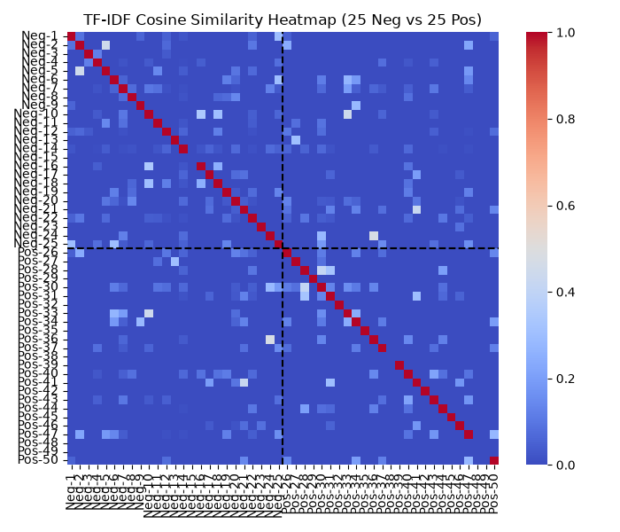
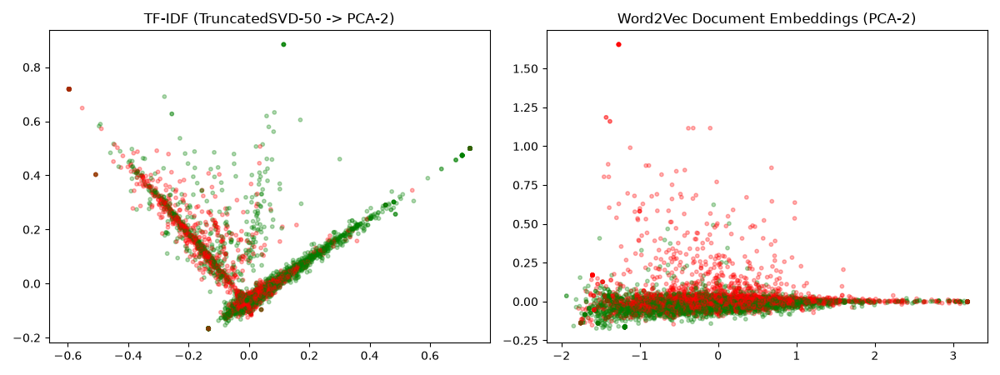
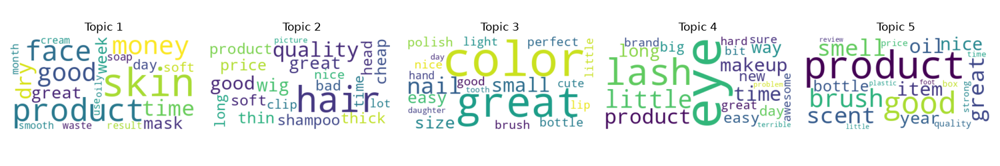
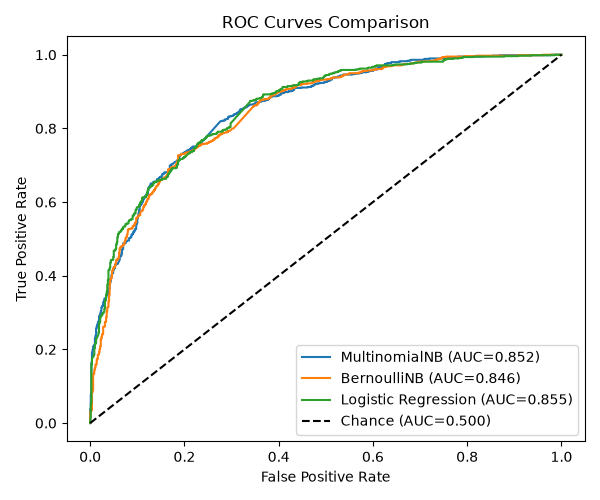
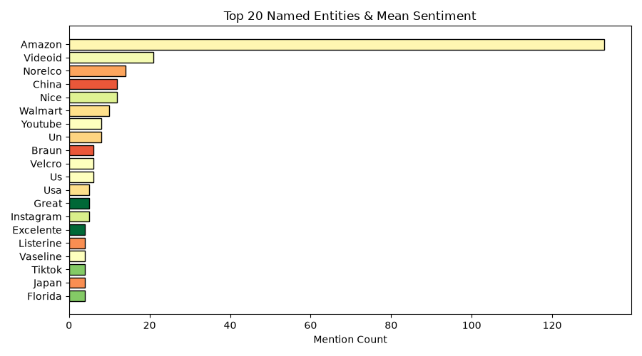

Two token streams were retained for different objectives. The POS-filtered stream keeps lemmatised NOUN and ADJ tokens, reducing grammatical noise for TF-IDF and interpretable LDA topics. The lightly cleaned Word2Vec stream keeps all alphabetic content-word lemmas, preserving broader semantic context for averaged embeddings. NER runs on the original spaCy documents so entity extraction is not restricted by either modelling stream.


Models with k=5, 7, 10 were compared using c_v coherence; k=5 was selected (c_v=0.5012).

| Topic | Human-Readable Label | Top Representative Terms | Reviews | % Pos | % Neg |
|---|---|---|---|---|---|
| 1 | Makeup Tools & Application | brush, money, small, item, head | 1,784 | 47.8% | 52.2% |
| 2 | Eye & Face Makeup | color, eye, lash, light, makeup | 1,757 | 45.4% | 54.6% |
| 3 | Nail Care & Quality | great, product, good, nail, quality | 1,682 | 54.9% | 45.1% |
| 4 | Skincare & Cleansers | product, skin, good, smell, scent | 1,083 | 46.7% | 53.3% |
| 5 | Hair & Wig Styling | hair, wig, good, thin, product | 1,684 | 54.5% | 45.5% |
Evaluation uses a stratified 20% held-out test split (random_state=42).
| Classifier | Accuracy | Precision | Recall | F1-Score | ROC-AUC |
|---|---|---|---|---|---|
| MultinomialNB | 0.7716 | 0.7477 | 0.8198 | 0.7821 | 0.8522 |
| BernoulliNB | 0.7610 | 0.7718 | 0.7409 | 0.7561 | 0.8459 |
| Logistic Regression | 0.7610 | 0.7747 | 0.7359 | 0.7548 | 0.8548 |

Classifier Performance Notes:
MultinomialNB achieved the highest accuracy (77.16%) and F1-score (0.7821) by effectively leveraging term-frequency counts to capture positive sentiment tokens. Logistic Regression yielded the highest ROC-AUC (0.8548) and precision (77.47%), demonstrating superior confidence threshold calibration.
NER insight: Braun (ORG) has the lowest mean sentiment among the top named brands/products: 0.167 across 6 mentioning reviews (83.3% negative feedback). Negative reviews consistently highlight replacement blade dullness, motor issues, and packaging defects.
TF-IDF similarity: same-label mean = 0.0161; cross-label mean = 0.0132; same-label > cross-label = True. This validates that documents sharing the same sentiment exhibit higher intra-class lexical alignment than cross-sentiment pairs.
The classifier table and topic table should be interpreted with the entity recognition and topic-label heuristics in mind.
